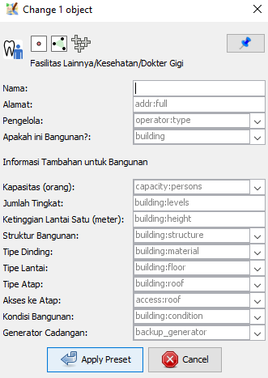
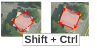
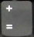
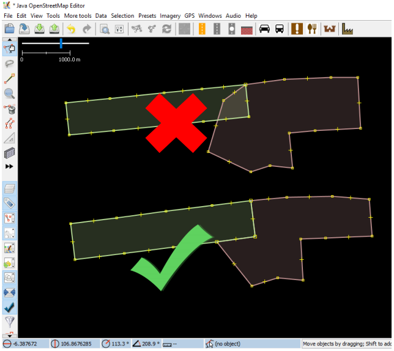
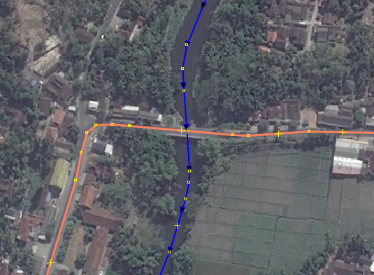
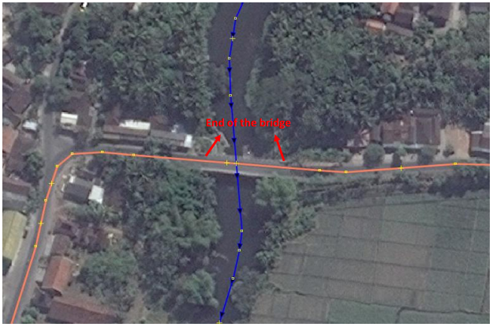
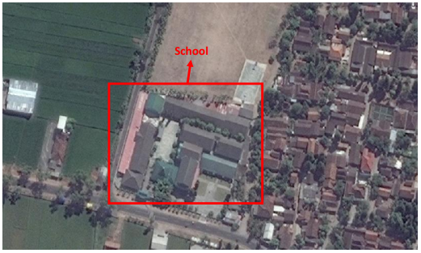
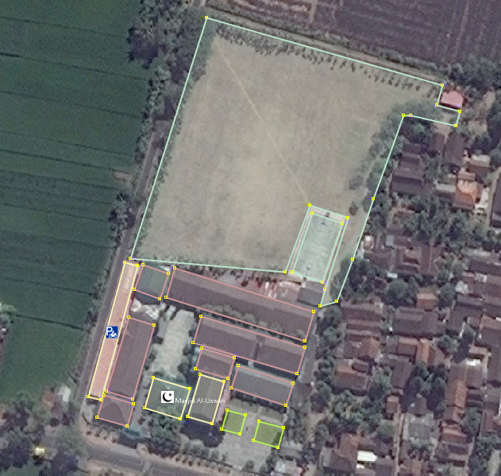
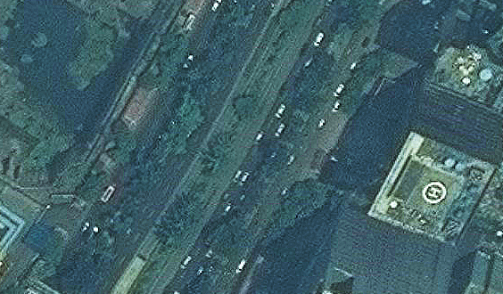

Using Java OpenStreetMap (JOSM)
Objective:
- Understanding how to use basic tools in JOSM
- Able to operate advance editing in JOSM
- Understanding editing tips in JOSM
- Understanding how to draw special objects such as bridge, school, and road networks
Java OpenStreetMap or commonly called JOSM is a desktop-based editor for OpenStreetMap. JOSM allows you to edit OSM data offline for a while or not always connect to the internet. If in the previous module you learned about operating JOSM, then in this module you will learn how to use JOSM.
I. Basic Drawing Techniques with JOSM
Please open an OSM sample file that we will use to learn how to draw a basic map with JOSM. Note that this data is only a sample with an unreal place, so please do not save and upload that data into OpenStreetMap.
- Download the sample file here: www.bit.ly/osmsampel
- Open the sample file OSM in JOSM. Click the Open a File button at the top left.
- Find and choose sample.osm in your computer that you have downloaded before, then click Open. Your computer screen will look like a picture below:
a. Basic Operation
To move the map right or left and up or down, you can do that by right click on your mouse then hold and move the mouse. There are two ways to zoom in and zoom out the map. First, you can use the scroll wheel on your mouse. Scroll forward to zoom in the map and scroll back to zoom out the map. Second, use scale bar in the upper left corner on your map. Click and hold then swipe right or left with your mouse.

b. Nodes, Ways, and Polygons
In OpenStreetMap there are three types of objects. There are nodes, ways, and polygons.
- Node is a location represented by a symbol. In this sample data, there are two points: the shoe store and supermarket. The shoe shop is represented by shoe symbol and supermarket is represented by the shopping basket symbol. If you can't see it clearly, please zoom in on your map.
- There are several ways object on maps, such as roads, rivers, and river embankments. If you look closer, you will see in the way that there are nodes. These nodes do not have a symbol or information, but they form a line.
- There are some polygons in the sample map that show different places such as forests, rivers, and buildings. A polygon generally represents an area such as a building or a field. Polygons are the same as lines, but the difference is that polygons consist of several lines that form where the endpoint meets the starting point of the line.
c. Selecting Object
To edit an object, you need to select the object. There is the step to select an object:
- Click select, move, scale, and rotate object tool for select object.
- Then click on an object you want to select.
When you select an object, it will be red and a list appears in the tag panel on the right side of your JOSM. Tags are a part of a node, way, or polygon that tell information about the object. Now what you need is to know the information to explain whether the object on the map is a forest, river, building, or other forms.
d. Change Object Position
You can change the position of objects that have been drawn in JOSM. There are steps:
- Select an object in the sample, for example forest object. Make sure you click the line in the forest, not the point. Then click and hold the object then slide it. You have just moved the forest to a new location on the map.
- Click one node on the forest line. Click and hold then move the node. By moving this node you can change the shape of an object.
e. Drawing an Object
On the left side of JOSM, there are many toolbars that provide more information about the map. It can change the command when you click the mouse, one of them is to draw an object. There are the steps for drawing an object:
- Before you draw an object, make sure that is no object is selected. Click outside the object where there are no objects, to make sure no object is selected.
- Then click on the Draw Tool button for drawing an object.

- Find an empty area on the map, then double click with your mouse, and a single node will be drawn.
- To draw a line, click once your mouse and move your mouse and click again. Continue until it forms a way/line. To end the line, double click on your mouse.
- The way to make polygons is the same as how to make ways, but to end the polygon you should double click on the first node you made.
f. How to Add Preset
Now you understand how to draw nodes, ways, and polygons. However, you still have not given information about the object. In OpenStreetMap, giving information about the object is required, whether the object is a school, hospital, government office, or something else. This is required so the others can find out information about the object. To give information on the object that you draw or edit, you need to add preset on the object. There are steps:
- Click Select toolbar on the left side of JOSM.
- Select the object that you want to add preset.
- Select Presets menu on the top side of JOSM. Move your mouse to the sub-menu of the object that you want to add preset.

- If you have a problem to find the sub-menu, you can click on Search preset or by pressing F3 on your keyboard.
- Then search preset window will appear. You can type the name object, such as a dentist. Then click Select.

- Next will appear a window about object information that you want to add preset. This information is not required for all, only the information that you know. If you know all the information please fill in. If you don't know, just skip it, then click Apply Preset. If everything goes smoothly, the color of nodes, ways, or polygons will change or have a symbol. This change depends on the information you put in the object.

II. Advance Drawing Technique with JOSM
In previous session you already install JOSM and learn how to do basic drawing technique, such as draw nodes, ways, and polygons. You also already know how to add preset to object that you draw to provide information about the object. At the end, you can draw your own map on JOSM. in this session, you will learn the right step to edit OpenStreetMap map on JOSM and how you can maximize the tools that available in JOSM to help you in editing.
a. Advance Drawing Tools in JOSM
In this material you will learn some basic tools and the technique for drawing map feature in JOSM. You will learn more detail for advance tools that will help you to map in JOSM. You can download the sample here http://www.bit.ly/edittools then open JOSM and open the sample file that you already downloaded. The JOSM will looks like this picture below:

JOSM has tools that will make it easier for you to edit either ways or polygons. These can be found in Tools menu at the top of JOSM. If you click on Tools menu, you will see that there are many functions that can help you draw ways, polygons, and also edit objects on the map.

For applying the functions in this menu, you need to select a node, way, or polygon in the map area. The sample file that you downloaded contains various elements that are labeled with different tool names in the menu. You can try the tools using the file sample. Explanation about some tools are provided below:
-
Split Way
Split Way is used to split a line segment into two separate line segments. This is useful if you want to add attributes to different parts of the road, such as a bridge or a different road name. To use this function, select a point in the middle of the line segment you want to split, then click Split Way from Tools menu, and the line will split. The shortcut key for split way is P on the keyboard after you select a point on the line.
After you have split way, you can add information about each road segments that have been split, for example giving the name of a road to both roads.
-
Combine Way
Combine way is the opposite of Split Way. Combine way used to join two line segments into one line segment. These two line segments must be connected to the same node. To use this function, select the two lines that you want to join. You can select more than one object by press shift on your keyboard and click on the both lines. When you have selected the two lines, click Combine Way from Tools menu. The two line segments will merge into one line segment. The shortcut key for combine way is C on the keyboard after you select two lines.

If you combine roads that have different directions, you will get a warning like the picture below. The warning means if the road is connected and it will has the same direction. If you are sure to combine the two roads, please click Reverse and Combine.

-
Reverse Way
Reverse way is used to change the direction of the way. All ways in OSM have a direction which is shown in JOSM with arrows on the way. The direction is very useful for mapping roads that have one way direction and river flow (upstream to downstream). In this case, you need to reverse the direction of the way, so the way is in the right direction. How to use reverse way is click on the way that you want to change the direction, then go to tools menu and click Reverse Ways. The shortcut key to use reverse way is R on the keyboard.
-
Simplify Way
If your way is has too many nodes and you want to make it simpler, simplify way menu will delete some of the nodes on the way. This tool also used to speed up when uploading data because it removes several nodes that are on the way. To use simplify way is click on the way that you want to simplify, then go to the menu tools and click Simplify Way. The shortcut key to simplify way is Shift + Y on your keyboard_._
-
Align Nodes in Circle
If you have difficulty to draw a circle in OSM, you can use align nodes in circle tool to create a perfect circle shape. To use this tool, you should draw a not perfect circle, click it, then go to tools menu and choose Align Nodes in Circle. The shortcut key for align nodes in circle is O on your keyboard.
-
Create Circle
As an alternative to create circles, you can use Create circle tool. It will make a circle from the diameter of the circle (only requires a line way of two nodes). To use this create circle is to draw a way or line that represents the diameter of the circle you want to draw, then go to tools menu and click Create Circle. The shortcut key for create circle is Shift+O on your keyboard.
-
Align Nodes in Line
This tool function is to convert irregular line/way into straight shapes. Be careful if you use this tool because it has a slight tendency to shift lines/ways. Remember that this tool will straighten the shape of the line according to the location of the starting point and end of the line. To use this tool is click the line/way that you want to align, then go to tools menu and click Align Nodes in Line. The shortcut key for align nodes in line is L on your keyboard.

-
Orthogonalize Shape
Orthogonalize shape is very useful to make a polygon that have irregular angles into rectangular shape, like building. After you draw a building, orthogonalize shape will form a building that has 90’ square angle. How to use orthogonalize shape is click on the object that you want to change the shape, then go to tools menu and select Orthogonalize Shape. The shortcut key for orthogonalize shapes is **Q **on your keyboard.

-
Unglue Way
Unglue way has a function to release the connected nodes. Unglue way is useful when two objects are in the same nodes even though it should not. For example, a common mistake is that a road has the same node with building. Of course in the field, roads cannot join to buildings, so this is a mistake. To fix this, you can release one object from another. To use unglue way is to click the node that sticks together between two objects, and then go to the tools menu and select Unglue Way. The shortcut key for unglue way is G on the keyboard. You need to remember that if you use this tool, between two objects that you were unglue way before will not automatically separate, you should move one of the objects.


Sometimes there are questions about how to rotate a line or polygon after the object is drawn. There are the steps:
- To rotate an object, first select the object that you want to rotate.
- Hold SHIFT + CTRL on your keyboard.
- Click and drag the mouse to rotate.

b. Shortcut in Keyboard
After editing in OpenStreetMap, you will realize that you have difficulty to find the tools location in tools menu. To resolve this, JOSM has shortcuts keyboard for everything. This aims to make it easier for you without having to click on the object and then go through a long menu and sub-menu process. You can choose the object then press the shortcut on your keyboard. There are some of the frequently used shortcut keys:
Table of Some Shortcut Keys in JOSM
| No. | Tools | Symbol |
|---|---|---|
| 1 | Activate Select Tool | |
| 2 | Activate Draw Tool |  |
| 3 | Activate Zoom Tool |  |
| 4 | Delete Selected Object | |
| 5 | Zoom In |  |
| 6 | Zoom Out |
III. Editing Tips
There are some common mistakes that users made when start to use OpenStreetMap. Here are some mistakes that are often made and some tips or brief instructions to map better.
1. Objects That Should Not Connected
When you create polygons and lines/ways that should not connected, make sure that they are not connected by a node. For example, highway node should not connect to building node, even though in reality there are buildings located in front of road, but there is still a little space that separates the building and the road. If you want to separate two or more objects that are connected in one node, click on the node that sticks together between two or more objects, and then go to the Tools → UnGlue Ways or the shortcut is G on the keyboard, then move the object.
2. Objects That Should Connected
Previously you learn about object that should not connected. Now you will learn about object that should connected, for example intersections that should always connected to node. If they are not connected at one node, then JOSM does not know that the road is actually connected to each other. Therefore, if there are roads not connected to each other, you can fix them by selecting the node of the road that you want to connect, then go to Tools→ Merge Nodes or press M on your keyboard.

3. Overlap Objects
One common mistake when drawing in JOSM are overlap object or polygon. A building cannot overlap with other buildings. For example, residential land use polygons should not overlap with garden polygons.

There are some exceptions to this rule, for example school building. In the school area you may want to identify buildings using polygons, but maybe you also want to create a polygon that covers the entire school area include the yard. In this case, polygons are allowed to overlap, but the rule is all the buildings should inside school area polygon.

4. Other Tips
When drawing in JOSM, there are other mistakes that often happenned. There are the mistakes also the tips for avoiding it.
Table of Mistakes and Tips
| Mistakes | Tips |
|---|---|
Tags are given to nodes, not to objects (for example: buildings)  |
One common problem that often happen is adding tags to a node that a part of a line/way or polygon. This often happens when someone draws an object, then selects all objects (include select all nodes). Then someone add the preset, so the tag is in every nodes of the polygon, this is wrong. |
| Intersections at a corner or intersection must be separated | When roads intersect with each other at a corner of the road, you should not make curved lines at the intersection. The line should have an angle of 90° and separate into two different line segments, as in actual conditions on the ground. |
No tag on object  |
To fix this error, select the object and go to presets menu to add the tag based on object's information or it can be deleted if the object is a mistake. This is because, the OSM server cannot read the object that does not have tags/presets (object information). |
Line/way are close to other line/way but not connected  |
To fix this, you can select the point of the line that you want to connect and then select Draw nodes tools to add points on the horizontal line/way in front of it. Alternatively, you can use Merge Node (if in front of the unconnected line is a node) there are the steps: Select the two adjacent nodes, which are inside the two lines/way that you want to connect. Select Merge Node in tools menu. If in front of the unconnected line there is no node, you can use Join Node to Way: Select the last node of the unconnected line and also select the line that is in front of the unconnected line. Select the Join Node to Way in the Tools menu. |
| Line/way may not pass through buildings | To resolve this, you need to look at satellite imagery which objects in the wrong location. Then you can move the object to the appropriate place. Example of line/way that can not cross building is river. |
IV. Drawing Special Object
Now you have learned how to draw an object in OSM using JOSM and what should you consider in drawing an object in JOSM. When you try to draw an object using satellite imagery, you will see several objects need special technique drawing, such as bridge, office, or large road that have barrier.
1. Drawing Bridge
Bridge can be found on a river network. However in OSM, you can not just draw a line/road over the river. If you do that, technically your editing in JOSM can still be uploaded on OSM, but it will be a warning in the system. Then, how to draw the correct bridge? There are the steps how to draw a bridge.
There are the steps how to draw a bridge:
- First, draw a river network.
- Draw road network that cross above the river.

- Zoom in the imagery satellite, you will see the left and right end of the bridge.

- On the road line, make nodes that coincide with the left and right ends of the bridge.
- Next, you will separate the line into bridge line and road line. Click on the two nodes you just created, which are the left and right end of the bridge, then go to Tools → Split Way.
- So, the line that was only one segment line/road, now divided into three segments, that are (1) road network on the left side of the bridge, (2) the bridge, and (3) road network on the right side of the bridge.
- Next step is to give a tag that the object is a bridge. Now, click on the bridge, then go to Preset → Man Made → Bridges → Bridge.
- There is a bridge preset window will open. Just fill in the description Bridge=yes dan Layer=1. Layer=1 to add information that the bridge is one level higher than the ground.
- Finish.

2. Draw School, Offices, or Buildings
A school, hospital, or office building sometimes not stand alone, but consists of several buildings. In this sub-chapter, you will learn how to draw school area that has several buildings and objects. See the example image below:

Some people draw it as very large building, bounded by a circular fence (picture a). Others draw each building in one area separately, then each building given a tag (picture b). With the second way, it will be calculated more than one school. This is a wrong way to draw the school area.
So how to draw school or other building area that have several buildings in correct way? There are the steps:
- First, draw objects from the school area that are inside the school fence or outermost area, such as classrooms, parking lots, mosque, and field. Give them tags based on their object type.

- After all the elements are drawn, draw the fence or outermost border of the school and giving the tag as amenity = school.

If you draw it like the picture above, then you have successfully made a picture of the school area correctly.
3. Drawing a Road Network with Barrier
A road network can be found in simple form (1-3 meters wide and without barrier) (picture a), but can also be found in complex form, which are very wide (10-20 meters) and there is a barrier.

To draw a simple road network, of course it is very easy, which is enough to draw it with one line. However, to draw a road network that has a barrier in the middle of the road, you must draw one way road that are separate with other roads. The picture below is part of the Thamrin road section, Central Jakarta. This road has a width of approximately 40 meters, and there is a barrier in the middle of the road, which separates vehicle from the north and from the south.

To draw Thamrin road, you must draw two lines, which one road is passed by vehicles from the north and the other road is passed by vehicles from the south. There are the steps for draw a road like Thamrin road:
- First, draw a line from bottom to top (south to north), then give tag highway=primary, name=Jalan Thamrin, and oneway=yes. Then, draw a line from top to bottom (north to south), then give tag highway=primary, name=Jalan Thamrin, and oneway=yes.

Please pay attention to the direction of the arrow on both lines. On the first line, the direction of the up arrow means that the road segment is passed by vehicles from south to north. On the second line, the direction of the down arrow means the road segment is passed by vehicles from north to south.
If a road has four different segments (that means have three barriers), for example a slow lane to the north, a fast lane to the north, a slow lane to the south, and a fast lane to the south; then you have to draw the road with four lines. For example on Jalan Sudirman, Central Jakarta.



SUMMARY
Congratulations! You have learned how to use tools menu or any tools in JOSM that can help you to map objects in OSM. You have also learned editing tips that will be useful when you editing with JOSM. In the next module, you will learn more about the process to edit the OSM map in JOSM.